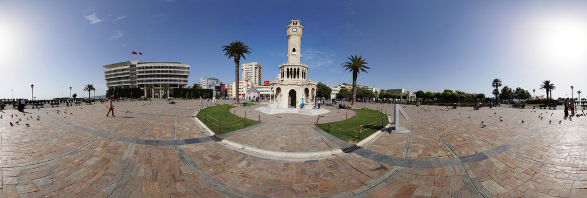

İzmir'in en ünlü simgesel yapısı olan İzmir Saat Kulesi, 1901 yılında Osmanlı padişahı II. Abdülhamit'in tahta çıkışının 25. yılını kutlamak amacıyla inşa edilmiş bir şaheser. Kemeraltı Çarşısı’nın girişinde ve Konak Yalı Cami'nin yanı başında yer alan 25 metre yükseklikte 4 katlı etkileyici saat kulesi, özgün mimarisi ile diğer Osmanlı saat kulelerinden ayrılıyor. Ünlü bir Fransız mimar tarafından tasarlanan İzmir Saat Kulesi, kesme taşlarla inşa edilmiş ve etkileyici taş kabartmalar ile süslü. Saat kulesinin çevresindeki dört çeşme ve Kuzey Afrika’yı simgeleyen kolonlar da görülmeye değer güzellikte. Sultan II. Abdülhamid'in tuğrasının da kabartma olarak işlendiği, 81 m2 taban genişliğine sahip İzmir Saat Kulesi’nde fotoğraf çekmeden şehirden ayrılmayın.
İzmir'in simgesel yapılarından biri haline gelen ve 1907 yılında bir iş adamı tarafından yaptırılan İzmir Tarihi Asansör, 58 metre yüksekliği ile hemen dikkatinizi çekecek. Mithatpaşa Caddesi ile Şehit Nihatbey Caddesi arasında yer alan ve sunduğu panoramik İzmir manzaraları ile ünlü İzmir Tarihi Asansör, 155 basamaktan oluşuyor. Asansörün en üst katında ise bir kafeterya ve seyir terası var. Etkileyici klasik taş mimarisiyle görülmeye değer güzellikteki Tarihi Asansör’ün terasında İzmir’in panoramik manzaraları eşliğinde çayınızı yudumlayabilir ve harika fotoğraflar çekebilirsiniz.
Türkiye'nin en çok ziyaret edilen tarihi hazinelerinden biri olan Efes Antik Kenti, her biri UNESCO Dünya Mirası Listesi’ne giren Çukuriçi Höyük, Ayasuluk Tepesi, Efes Antik Kenti ve Meryem Ana Evi gibi farklı bölümlerden oluşuyor. Antik dönemin en büyük ve güçlü kentlerinden biri olan Efes Antik Kenti, uzun tarihinde Herakletos ve Hermodor pek çok filozof ve bilim insanı da yetiştirmiş. Rehberli turlarla keşfe çıkabileceğiniz bu büyüleyici antik kentte 24.000 kişi kapasitesiyle antik dönemin en büyük açık hava tiyatrosu olan Efes Antik Tiyatrosu, Celsius Kütüphanesi, Hadrian Tapınağı, Curates Caddesi ve etkileyici teras evleri arasında tarihte bir yolculuğa çıkacaksınız. Antik tiyatrosunda her yıl pek çok uluslararası önemli etkinlik de düzenlenen Efes Antik Tiyatrosu, İzmir gezilerinde kesinlikle ziyaret edilmesi gereken tarihi yerler arasında.